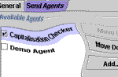
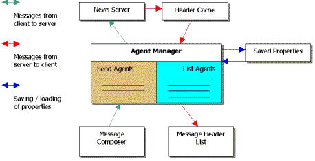
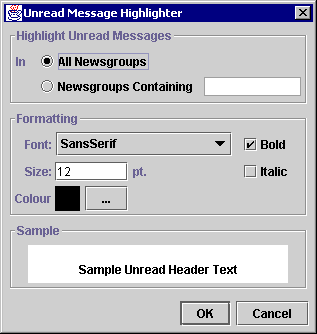

|
NewsAgent version 1.01B allows you to design customised add-ons to make your newsreading experience much more convenient. Find out all about the concept of Agents, their benefits and limitations in the current version, and what the future holds. Author: Brian Duff Go back to DevCorner, June 1998 |
From the beginning, NewsAgent was intented to be as extensible as possible. The idea of agents originally sprung from the requirement that NewsAgent should be able to process outgoing messages in some way to make sure they don't contain common mistakes before being posted to a news server. This gave rise to the idea of distinct modules that looked for specific problems in message text and that could be turned on and off by the user. Agents are an extension of this idea: plug-in modules can be provided to examine the message text of outgoing articles, and to process incoming headers.
These two distinct tasks are represented by two types of agent in NewsAgent. SendAgents come into play when a message is being posted to a news server, and can process and modify outgoing message body and header text. ListAgents are invoked when the list of messages are read in from a news server. They can examine the header fields of messages and change the way those headers are displayed, and even delete messages before the user can see them.
|
We'll begin by considering how to construct an agent, describing some principles that are the same regardless of which type of agent you wish to create. Firstly, writing an agent requires you to have NewsAgent installed on your system. You should make sure you are using the latest version. Although the core agent technology isn't expected to change much and should remain backwards compatible, bear in mind that NewsAgent is beta software, and functionality may be added to the agent system in future versions of the application. NewsAgent must be installed and the .jar file (or naclass directory under windows) included in your CLASSPATH. You will also have to be reasonably competent at writing and compiling Java programs. Java is a relatively easy language to learn and is quite similar to C++ in many ways. You should have a Java compiler installed on your system: the Java Development Kit supplied by JavaSoft or a good IDE such as Borland JBuilder would be ideal. The final two requirements are a text editor (or IDE) for writing Java code and a web browser for browsing the documentation on the interfaces between agents and the NewsAgent application. |
Requirements
|
To make it easier to understand agents, we'll provide a brief overview of how agents interact with the rest of NewsAgent. The AgentManager is a component of NewsAgent which maintains a list of active Send and List Agents. When the "Send" button is clicked in the Message Composer dialogue, the message is first sent to the Agent Manager, which passes it in sequence to all of the currently active Send Agents. Each Send Agent is allowed to modify the message, prevent it from being posted and display messages to the user depending on the content of the message. If all the Send Agents permit the message to be posted, it is sent to the news server.
When a header (usually one of a sequence of headers) is read in from the news server, it is added to a cache and then passed to the Agent Manager. The Agent Manager passes the message header through all the currently active list agents, which may modify header fields. Additionally, list agents can change the formatting that will be used to display the message header in the conversation thread panel (e.g. its font), or delete a message so that the user never sees it.

The final component of the Agent Manager is the saving and restoring of agent properties. Each agent (whether a list or send agent) has a set of associated properties. NewsAgent doesn't care what these properties are: they are included to let agent designers add configuration options to their agents so that the user can change the behaviour of agents. It is the job of the Agent Manager (and not individual agents) to make sure these properties are saved and restored when the program is exited and started.
There are a number of user interface related aspects to Agents. As mentioned previously, agents can be switched on and off by the user. Additionally, the configuration of individual agents has been alluded to.
The preferences dialogue contains two property sheets for controlling agents. These panels are very similar; the picture below is of the Send Agent configuration panel. The panels can be used to switch agents on and off, change the order in which agents are invoked, add agents and configure individual agents (using the Configure... button).
As described above, agents can have a set of properties associated with them. The Configure... button is intended to allow the agent's programmer to provide a user interface for setting these properties. Each agent can provide a JPanel (or subclass of JPanel) that contains user interface elements for configuring the agent. This panel is displayed inside a modal dialogue box with OK and Cancel buttons. If the user clicks OK, the agent is allowed to examine the contents of the panel again and change its properties depending on how the user has changed the user interface components in the panel.
One of the ListAgents provided with NewsAgent marks messages that haven't been read differently from those that have. Its configuration panel is shown below, as it appears when the user clicks on the Configure... button.

List agents are most fully implemented in the current version of NewsAgent. A demonstration list agent is provided that you can modify to create your own list agents. In this section, we'll step through the source code for the Demo List agent and describe the IListAgent interface in detail by doing so.
You can view or download the DemoListAgent.java source code.
package uk.ac.st_and.dcs.newsagent.agent;
...
import uk.ac.st_and.dcs.newsagent.MessageHeader;
import uk.ac.st_and.dcs.newsagent.MessageBody;
import uk.ac.st_and.dcs.newsagent.agent.IListAgent;
import uk.ac.st_and.dcs.newsagent.agent.ListAgentMessage;
...
The package statement tells the Java compiler where the compiled class file should be stored in the classpath. NewsAgent doesn't care what package you put Agents in, although you shouldn't use uk.ac.st_and.dcs.newsagent.agent, because classes in that package are considered a core part of NewsAgent. You could just use something like:
package myagents;
The three import statements shown above tell the Java system to import those three classes into the name space. The three imported classes and the IListAgent interface define the way in which your agent communicates with NewsAgent.
| MessageHeader | The MessageHeader class represents the header of a message. It consists of methods for retrieving the header fields, as well as formatting methods which alter the way the header is displayed in the message header display. |
| MessageBody | The MessageBody class represents the body text of a mesage. The message body is only available to SendAgents. |
| IListAgent | This is the interface that ListAgent classes must implement. All methods in this class must be given an implementation by your list agent. |
| ListAgentMessage | When your agent has examined the message header, it passes an object of this class back to NewsAgent to let NewsAgent know how you've modified the message header. |
public class DemoListAgent implements IListAgent {
private static final String m_name = "Demo List Agent";
private static final String m_desc =
"This agent marks messages from anyone called Brian in red. It's really just a demo to show how Agents work.";
private Properties m_properties;
We have declared our new class as implementing the IListAgent interface above, and provided some private instance variables that will be used in the code below.
public DemoListAgent() {
m_properties = new Properties();
}
Constructing the agent simply consists of initialising its private properties object. It is recommended that you initialise this to a new Properties object even if your agent doesn't have any user configurable properties.
public String getName() {
return m_name;
}
The getName() method should return the name of the agent. This will be used in the Preferences dialogue to refer to the agent. It can contain spaces, but shouldn't be too long (1-3 words).
public Icon getIcon() {
return null;
}
The getIcon() method should return an icon associated with the agent, or null. This method is currently unused in NewsAgent, so you should probably just return null for now.
public String getDescription() {
return m_desc;
}
The getDescription() method should return a longer description of what the agent does. This is displayed in the description box in the preferences dialogue when the agent is selected.
public JPanel getConfigurationPanel() {
return new JPanel();
}
The getConfigurationPanel() method should return a JPanel object (or a subclass of JPanel()) which will be displayed in a modal dialogue when the user selects this agent in the preferences dialogue and clicks the Configure... button. It is probably more useful to return a subclass of JPanel. A future article will look at configuration panels for agents in more detail. If you do not have a configuration dialog, return null from this method [Version 1.01B or earlier: a bug in the agent system means that returning null from this function will cause a NullPointerException when the user clicks on Configure... To get round this problem, return new JPanel() from this method].
public void applyConfiguration(JPanel panConfig){
;
}
applyConfiguration() is called by NewsAgent when the user dismisses your configuration panel by clicking OK in the modal dialogue in which it is contained. The configuration panel is passed back as an argument to this method. If you chose to use a subclass of JPanel, you can now cast panConfig to your JPanel subclass and use any methods the subclass contains to determine how the user changed the configuration in the panel.
public ListAgentMessage checkMessage(MessageHeader msgHead) {
/*
* If the message is from "Brian", mark it in red.
*/
String realName = msgHead.getRealName();
if (realName.indexOf("Brian") >= 0) {
// Change the appearance of the message
msgHead.setForeground(Color.red);
return new ListAgentMessage(false, false, true, false, "");
} else
return new ListAgentMessage(); // Nothing changed
}
checkMessage() is arguably the most important component of a ListAgent. This is where you are actually passed a MessageHeader object to consider. In the above example, the getRealName() method of MessageHeader is used to determine the real name of the person who sent the message. If the real name string contains the substring "Brian", the setForeground() method of MessageHeader is used to change the formatting of the header so that it is displayed in red.
An object of type ListAgentMessage is returned from this method depending on what it did to the message header. The default constructor (ListAgentMessage()) indicates that nothing changed in the message header. The long form of the constructor has the following arguments:
public ListAgentMessage(boolean didDelete,
boolean didChange,
boolean didChangeDisplay,
boolean isUserMessage,
String message)
| didDelete | whether the message is to be deleted |
| didChange | whether the contents of the header changed |
| didChangeDisplay | whether the appearance (font or colour) of the message was changed |
| isUserMessage | whether this reply should display a message to the user |
| message | the message to display, or an empty string. |
public Properties getProperties() {
return m_properties;
}
public void setProperties(Properties p) {
m_properties = p;
}
These two methods are the final component of the properties system of agents. When NewsAgent is ready to save your agent's properties, it will call the getProperties() method of your agent. Similarly, when your agent is initialised, the AgentManager of NewsAgent will call the setProperties method to restore the properties of your agent to the saved values.
In describing the workings of the DemoListAgent, we've hopefully provided you with the starting blocks to writing your own agents. Future articles will go into more detail on some of the more intricate elements of agents, including how to implement your properties panel.
The best way to learn about agents is to look at the source code for agents provided with NewsAgent. The relevance agent is by far the most complex agent provided with NewsAgent. It consists of several classes which you can find in the dubh/agents/relevance subdirectory of the source distribution (available in downloads).